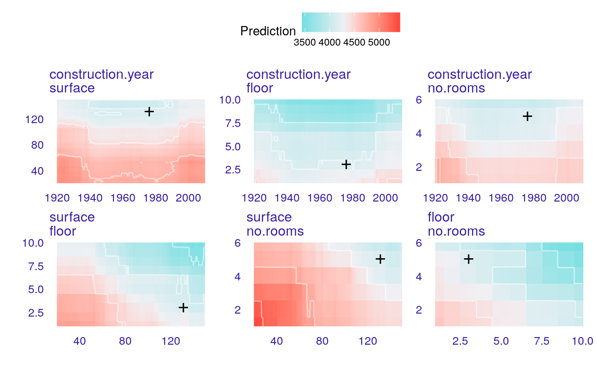
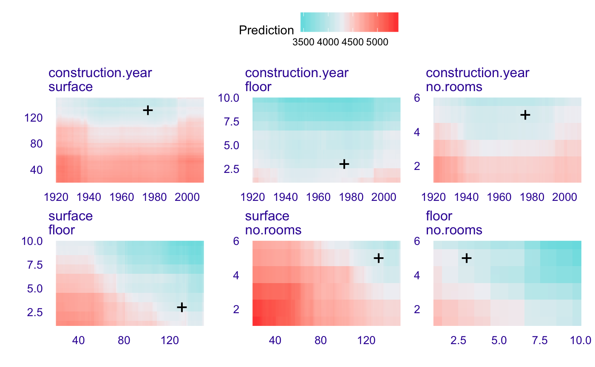
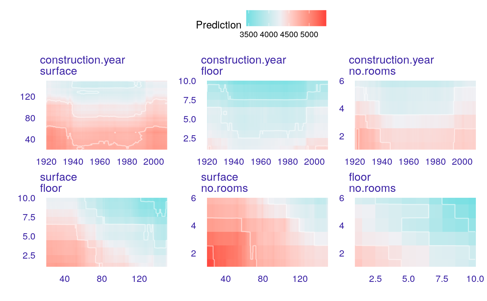
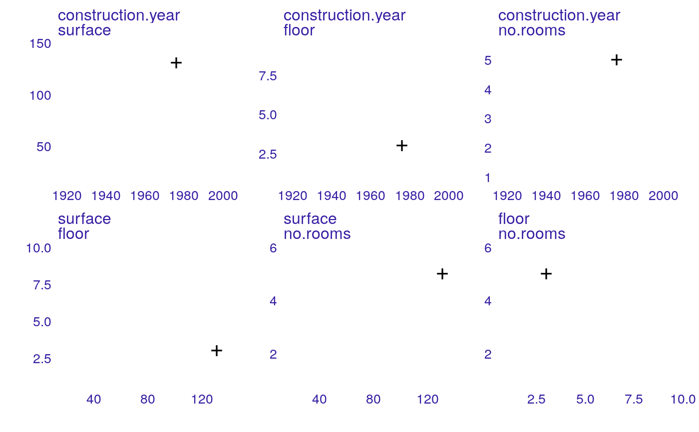
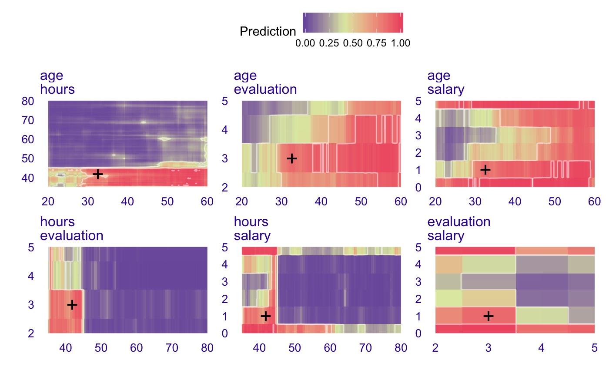

R/plot_ceteris_paribus_2d.R
plot.ceteris_paribus_2d_explainer.RdThis function plots What-If Plots for a single prediction / observation.
# S3 method for ceteris_paribus_2d_explainer plot(x, ..., facet_ncol = NULL, add_raster = TRUE, add_contour = TRUE, bins = 3, add_observation = TRUE, pch = "+", size = 6)
| x | a ceteris paribus explainer produced with the |
|---|---|
| ... | currently will be ignored |
| facet_ncol | number of columns for the |
| add_raster | if |
| add_contour | if |
| bins | number of contours to be added |
| add_observation | if |
| pch | character, symbol used to plot observations |
| size | numeric, size of individual datapoints |
a ggplot2 object
Predictive Models: Visual Exploration, Explanation and Debugging https://pbiecek.github.io/PM_VEE
library("DALEX") library("randomForest") apartments_rf_model <- randomForest(m2.price ~., data = apartments) explainer_rf <- explain(apartments_rf_model, data = apartments_test[,-1], y = apartments_test[,1], verbose = FALSE) new_apartment <- apartments_test[1,] new_apartment#> m2.price construction.year surface floor no.rooms district #> 1001 4644 1976 131 3 5 Srodmiescie#> y_hat new_x1 new_x2 vname1 vname2 label #> 1001 4985.395 1920 20.0 construction.year surface randomForest #> 1001.1 4984.139 1920 21.3 construction.year surface randomForest #> 1001.2 4991.984 1920 22.6 construction.year surface randomForest #> 1001.3 4989.834 1920 23.9 construction.year surface randomForest #> 1001.4 4988.589 1920 25.2 construction.year surface randomForest #> 1001.5 4988.296 1920 26.5 construction.year surface randomForestplot(wi_rf_2d)#> Warning: Raster pixels are placed at uneven horizontal intervals and will be shifted. Consider using geom_tile() instead.#> Warning: Raster pixels are placed at uneven vertical intervals and will be shifted. Consider using geom_tile() instead.#> Warning: Raster pixels are placed at uneven horizontal intervals and will be shifted. Consider using geom_tile() instead.#> Warning: Raster pixels are placed at uneven vertical intervals and will be shifted. Consider using geom_tile() instead.#> Warning: Raster pixels are placed at uneven horizontal intervals and will be shifted. Consider using geom_tile() instead.#> Warning: Raster pixels are placed at uneven vertical intervals and will be shifted. Consider using geom_tile() instead.# \donttest{ # HR data model <- randomForest(status ~ gender + age + hours + evaluation + salary, data = HR) pred1 <- function(m, x) predict(m, x, type = "prob")[,1] explainer_rf_fired <- explain(model, data = HR[,1:5], y = HR$status == "fired", predict_function = pred1, label = "fired")#> Preparation of a new explainer is initiated #> -> model label : fired #> -> data : 7847 rows 5 cols #> -> target variable : 7847 values #> -> predict function : pred1 #> -> predicted values : numerical, min = 0 , mean = 0.3762457 , max = 1 #> -> residual function : difference between y and yhat ( default ) #> -> residuals : numerical, min = -0.768 , mean = -0.01241239 , max = 0.722 #> -> model_info : package randomForest , ver. 4.6.14 , task classification ( default ) #> A new explainer has been created!new_emp <- HR[1,] new_emp#> gender age hours evaluation salary status #> 1 male 32.58267 41.88626 3 1 fired#> y_hat new_x1 new_x2 vname1 vname2 label #> 1 0.462 20.00389 35.00000 age hours fired #> 1.1 0.560 20.00389 35.44978 age hours fired #> 1.2 0.630 20.00389 35.89955 age hours fired #> 1.3 0.628 20.00389 36.34933 age hours fired #> 1.4 0.594 20.00389 36.79911 age hours fired #> 1.5 0.626 20.00389 37.24889 age hours firedplot(wi_rf_2d)#> Warning: Raster pixels are placed at uneven horizontal intervals and will be shifted. Consider using geom_tile() instead.#> Warning: Raster pixels are placed at uneven vertical intervals and will be shifted. Consider using geom_tile() instead.# }